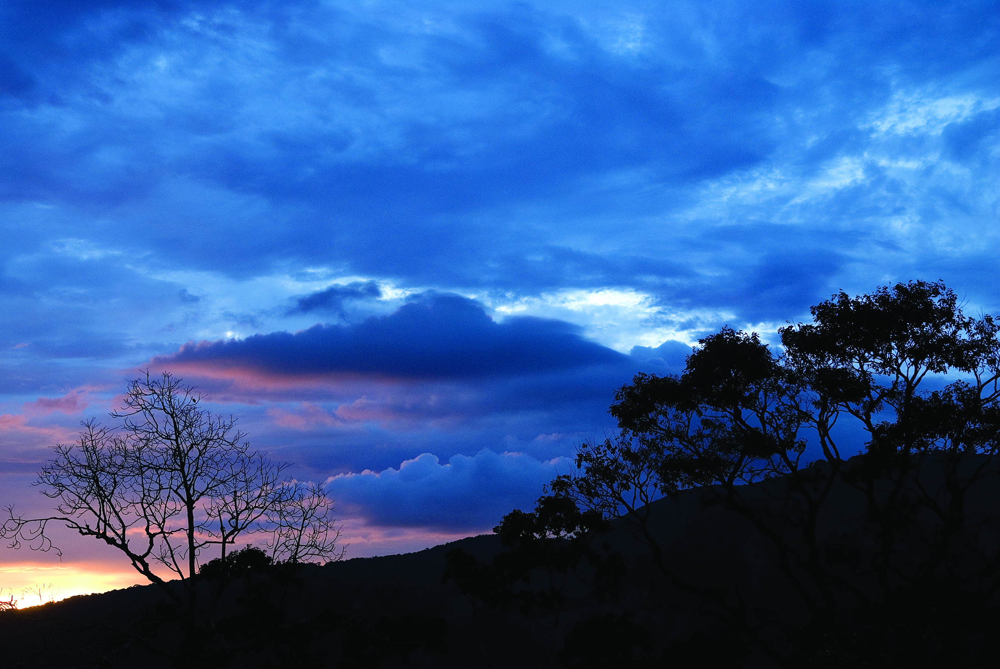

Palakkad
Palakkad, or Palghat, is a city in Kerala, a state in southwestern India. The 18th-century Palakkad Fort has sturdy battlements, a moat and a Hanuman temple on its grounds. North, on the Kalpathy River, the 15th-century Viswanatha Swamy Temple is the main venue of the famous Ratholsavam chariot festival. Northeast, near Malampuzha Dam, the town of Malampuzha has a rock garden created from recycled materials.
top attractions to visit in Palakkad
Nelliampathi
Nelliyampathy is a hill station within the Nelliyampathy Forest Reserve, in the southwest Indian state of Kerala. The road to it, which goes through the dense forests of the Western Ghats, is known for its many hairpin turns. To the west is Kesavan Para, a vantage point with views of nearby tea plantations. Farther west is the 19th-century Pothundi Dam. Northeast is the Seetharkundu Viewpoint, with waterfalls nearby.
Palakkad Fort

Palakkad Fort is an old fort situated in the heart of Palakkad town of Kerala state, southern India. It was recaptured and rebuilt grandly by Sultan Hyder Ali in 1766 ACE and remains one of the best preserved forts in Kerala